This package contains elementary example models to demonstrate the usage of the MultiBody library
| Model | Description |
|---|---|
| DoublePendulum | Simple double pendulum with two revolute joints and two bodies.
|
| ForceAndTorque | Demonstrates usage of Forces.ForceAndTorque element.
|
| FreeBody | Free flying body attached by two springs to environment.
|
| InitSpringConstant | Determine spring constant such that system is in steady state
at given position.
|
| LineForceWithTwoMasses | Demonstrates a line force with two point masses using a
Joints.Assemblies.JointUPS and alternatively a
Forces.LineForceWithTwoMasses component.
|
| Pendulum | Simple pendulum with one revolute joint and one body.
|
| PendulumWithSpringDamper | Simple spring/damper/mass system
|
| PointGravity | Two bodies in a point gravity field
|
| PointGravityWithMassPoints | Two point masses in a point gravity field (body rotation is neglected)
|
| SpringDamperSystem | Spring/damper system with a prismatic joint and
attached on free flying body
|
| SpringMassSystem | Mass attached via a prismatic joint and a spring to the world frame
|
| SpringWithMass | Point mass hanging on a spring
|
| ThreeSprings | 3-dimensional springs in series and parallel connection
|
| Name | Description |
|---|---|
| Simple double pendulum with two revolute joints and two bodies | |
| Demonstrate usage of ForceAndTorque element | |
| Free flying body attached by two springs to environment | |
| Determine spring constant such that system is in steady state at given position | |
| Demonstrate line force with two point masses using a JointUPS and alternatively a LineForceWithTwoMasses component | |
| Simple pendulum with one revolute joint and one body | |
| Simple spring/damper/mass system | |
| Two point masses in a point gravity field | |
| Two point masses in a point gravity field (rotation of bodies is neglected) | |
| Simple spring/damper/mass system | |
| Mass attached with a spring to the world frame | |
| Point mass hanging on a spring | |
| 3-dim. springs in series and parallel connection |
 Modelica.Mechanics.MultiBody.Examples.Elementary.DoublePendulum
Modelica.Mechanics.MultiBody.Examples.Elementary.DoublePendulum

This example demonstrates that by using joint and body elements animation is automatically available. Also the revolute joints are animated. Note, that animation of every component can be switched of by setting the first parameter animation to false or by setting enableAnimation in the world object to false to switch off animation of all components.

model DoublePendulum
"Simple double pendulum with two revolute joints and two bodies"
extends Modelica.Icons.Example;
inner Modelica.Mechanics.MultiBody.World world;
Modelica.Mechanics.MultiBody.Joints.ActuatedRevolute revolute1(initType=Modelica.Mechanics.MultiBody.Types.Init.
PositionVelocity);
Modelica.Mechanics.Rotational.Damper damper(d=0.1);
Modelica.Mechanics.MultiBody.Parts.BodyBox boxBody1(r={0.5,0,0}, width=0.06);
Modelica.Mechanics.MultiBody.Joints.Revolute revolute2(initType=Modelica.Mechanics.MultiBody.Types.Init.
PositionVelocity);
Modelica.Mechanics.MultiBody.Parts.BodyBox boxBody2(r={0.5,0,0}, width=0.06);
equation
connect(damper.flange_b, revolute1.axis);
connect(revolute1.bearing, damper.flange_a);
connect(revolute1.frame_b, boxBody1.frame_a);
connect(revolute2.frame_b, boxBody2.frame_a);
connect(boxBody1.frame_b, revolute2.frame_a);
connect(world.frame_b, revolute1.frame_a);
end DoublePendulum;
Modelica.Mechanics.MultiBody.Examples.Elementary.ForceAndTorque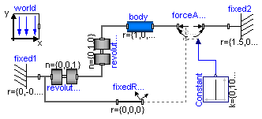
The animation view at time = 0 is shown in the figure below. The yellow line is directed from frame_a to frame_b of the forceAndTorque component. The green arrow characterizes the force acting at the body whereas the green double arrow characterizes the torque acting at the body. The lengths of the two vectors are proportional to the lengths of the force and torque vectors (constant scaling factors are defined as parameters in the forceAndTorque component):

model ForceAndTorque "Demonstrate usage of ForceAndTorque element"
extends Modelica.Icons.Example;
inner World world(animateGravity=false);
Parts.BodyCylinder body(r={1,0,0});
Parts.Fixed fixed1(r={0,-0.5,0}, width=0.03);
Parts.FixedRotation fixedRotation(n={0,0,1}, angle=30);
Forces.ForceAndTorque forceAndTorque(Nm_to_m=120, N_to_m=1200);
Joints.Revolute revolute2(n={0,1,0}, initType=Modelica.Mechanics.MultiBody.Types.Init.
PositionVelocity);
Modelica.Blocks.Sources.Constant Constant[6](k={0,1000,0,-100,100,0});
Joints.Revolute revolute1(initType=Modelica.Mechanics.MultiBody.Types.Init.PositionVelocity);
Parts.Fixed fixed2(width=0.03, r={1.5,0.25,0});
equation
connect(revolute2.frame_b, body.frame_a);
connect(forceAndTorque.frame_b, body.frame_b);
connect(fixed1.frame_b, revolute1.frame_a);
connect(revolute1.frame_b, revolute2.frame_a);
connect(fixed2.frame_b, forceAndTorque.frame_a);
connect(fixedRotation.frame_a, fixed1.frame_b);
connect(forceAndTorque.frame_resolve, fixedRotation.frame_b);
connect(Constant.y, forceAndTorque.load);
end ForceAndTorque;
Modelica.Mechanics.MultiBody.Examples.Elementary.FreeBody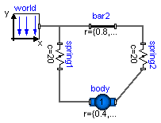
This example demonstrates:

| Type | Name | Default | Description |
|---|---|---|---|
| animation | true | = true, if animation shall be enabled |
encapsulated model FreeBody
"Free flying body attached by two springs to environment"
import Modelica.Icons;
import Modelica.Mechanics.MultiBody;
import Modelica.Mechanics.Rotational;
import Modelica;
extends Icons.Example;
parameter Boolean animation=true "= true, if animation shall be enabled";
inner Modelica.Mechanics.MultiBody.World world;
Modelica.Mechanics.MultiBody.Parts.FixedTranslation bar2(r={0.8,0,0}, animation=false);
Modelica.Mechanics.MultiBody.Forces.Spring spring1(
width=0.1,
coilWidth=0.005,
numberOfWindings=5,
c=20,
s_unstretched=0);
Modelica.Mechanics.MultiBody.Parts.BodyShape body(
m=1,
I_11=1,
I_22=1,
I_33=1,
r={0.4,0,0},
r_CM={0.2,0,0},
r_0_start={0.2,-0.5,0.1},
angles_start={10,10,10},
width=0.05,
initType=Modelica.Mechanics.MultiBody.Types.Init.PositionVelocity);
Modelica.Mechanics.MultiBody.Forces.Spring spring2(
c=20,
s_unstretched=0,
width=0.1,
coilWidth=0.005,
numberOfWindings=5);
equation
connect(bar2.frame_a, world.frame_b);
connect(spring1.frame_b, body.frame_a);
connect(spring2.frame_b, body.frame_b);
connect(bar2.frame_b, spring2.frame_a);
connect(spring1.frame_a, world.frame_b);
end FreeBody;
Modelica.Mechanics.MultiBody.Examples.Elementary.InitSpringConstant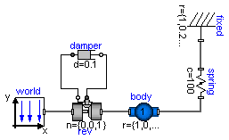
This example demonstrates a non-standard type of initialization by calculating a spring constant such that a simple pendulum is at a defined position in steady state.
The goal is that the pendulum should be in steady state when the rotation angle of the pendulum is zero. The spring constant of the spring shall be calculated during initialization such that this goal is reached.
The pendulum has one degree of freedom, i.e., two states. Therefore, two additional equations have to be provided for initialization. However, parameter "c" of the spring component is defined with attribute "fixed = false", i.e., the value of this parameter is computed during initialization. Therefore, there is one additional equation required during initialization. The 3 initial equations are the rotational angle of the revolute joint and its first and second derivative. The latter one are zero, in order to initialize in steady state. By setting parameter initType of the revolute joint "rev" to "MultiBody.Types.Init.PositionVelocityAcceleration", the required 3 initial equations are defined.
After translation, this model is initialized in steady-state. The spring constant is computed as c = 49.05 N/m. An animation of this simulation is shown in the figure below.

model InitSpringConstant
"Determine spring constant such that system is in steady state at given position"
extends Modelica.Icons.Example;
inner Modelica.Mechanics.MultiBody.World world(gravityType=Modelica.Mechanics.MultiBody.Types.GravityTypes.
UniformGravity);
Modelica.Mechanics.MultiBody.Joints.ActuatedRevolute rev(n={0,0,1}, initType=Modelica.Mechanics.MultiBody.Types.
Init.PositionVelocityAcceleration);
Modelica.Mechanics.Rotational.Damper damper(d=0.1);
Modelica.Mechanics.MultiBody.Parts.BodyShape body(
r={1,0,0},
r_CM={0.5,0,0},
m=1);
Modelica.Mechanics.MultiBody.Parts.Fixed fixed(r={1,0.2,0}, width=0.02);
Modelica.Mechanics.MultiBody.Forces.Spring spring(s_unstretched=0.1, c(fixed=false) = 100);
equation
connect(world.frame_b, rev.frame_a);
connect(damper.flange_b, rev.axis);
connect(rev.bearing, damper.flange_a);
connect(rev.frame_b, body.frame_a);
connect(fixed.frame_b, spring.frame_a);
connect(body.frame_b, spring.frame_b);
end InitSpringConstant;
Modelica.Mechanics.MultiBody.Examples.Elementary.LineForceWithTwoMasses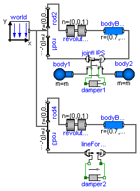
It is demonstrated how to implement line force components that shall have mass properties. Two alternative implementations are given:
In both cases, a linear 1-dimensional translational damper from the Modelica.Mechanics.Translational library is used as line force between the two attachment points. Simulate this system and plot the differences of the cut forces at both sides of the line force component ("rod_f_diff" and "body_f_diff"). Both vectors should be zero (depending on the choosen relative tolerance of the integration, the difference is in the order of 1.e-10 ... 1.e-15).
Note, that the implementation with the LineForceWithTwoMasses component is simpler and more convenient. An animation of this simulation is shown in the figure below. The system on the left side in the front is the animation with the LineForceWithTwoMasses component whereas the system on the right side in the back is the animation with the JointUPS component.

| Type | Name | Default | Description |
|---|---|---|---|
| m | 1 | Mass of point masses [kg] |
model LineForceWithTwoMasses
"Demonstrate line force with two point masses using a JointUPS and alternatively a LineForceWithTwoMasses component"
import SI = Modelica.SIunits;
extends Modelica.Icons.Example;
parameter Modelica.SIunits.Mass m=1 "Mass of point masses";
SI.Force rod_f_diff[3]=rod1.frame_b.f - rod3.frame_b.f
"Difference of cut-forces in rod1 and rod3";
SI.Force body_f_diff[3]=bodyBox1.frame_b.f - bodyBox2.frame_b.f
"Difference of cut-forces in bodyBox1 and bodyBox2";
inner Modelica.Mechanics.MultiBody.World world;
Modelica.Mechanics.MultiBody.Joints.Revolute revolute1(initType=Modelica.Mechanics.MultiBody.Types.Init.
PositionVelocity);
Modelica.Mechanics.MultiBody.Parts.BodyBox bodyBox1(r={0.7,0,0});
Modelica.Mechanics.MultiBody.Parts.FixedTranslation rod1(
r={0,-0.9,0},
width=0.01,
animation=false);
Modelica.Mechanics.MultiBody.Joints.Assemblies.JointUPS jointUPS(nAxis_ia={0.7,1.2,0}, animation=
true);
Modelica.Mechanics.MultiBody.Parts.Body body1(
r_CM=0.2*jointUPS.eAxis_ia,
cylinderDiameter=0.05,
animation=true,
m=m,
I_11=0,
I_22=0,
I_33=0);
Modelica.Mechanics.MultiBody.Parts.Body body2(
r_CM=-0.2*jointUPS.eAxis_ia,
cylinderDiameter=0.05,
animation=true,
m=m,
I_11=0,
I_22=0,
I_33=0);
Modelica.Mechanics.MultiBody.Parts.FixedTranslation rod2(
r={0,0.3,0},
width=0.01,
animation=false);
Modelica.Mechanics.Translational.Damper damper1(d=3);
Modelica.Mechanics.MultiBody.Joints.Revolute revolute2(initType=Modelica.Mechanics.MultiBody.Types.Init.
PositionVelocity);
Modelica.Mechanics.MultiBody.Parts.BodyBox bodyBox2(r={0.7,0,0});
Modelica.Mechanics.MultiBody.Parts.FixedTranslation rod3(
width=0.01,
r={0,-0.9,0.3},
animation=false);
Modelica.Mechanics.MultiBody.Parts.FixedTranslation rod4(
width=0.01,
r={0,0.3,0.3},
animation=false);
Modelica.Mechanics.Translational.Damper damper2(d=3);
Modelica.Mechanics.MultiBody.Forces.LineForceWithTwoMasses
lineForceWithTwoMasses(
L_a=0.2,
L_b=0.2,
cylinderLength_a=0.2,
cylinderLength_b=1.2,
massDiameterFaction=2.2,
m_a=m,
m_b=m);
equation
connect(jointUPS.bearing, damper1.flange_a);
connect(jointUPS.axis, damper1.flange_b);
connect(jointUPS.frame_ib, body2.frame_a);
connect(world.frame_b, rod2.frame_a);
connect(world.frame_b, rod1.frame_a);
connect(rod2.frame_b, revolute1.frame_a);
connect(revolute1.frame_b, bodyBox1.frame_a);
connect(bodyBox1.frame_b, jointUPS.frame_b);
connect(body1.frame_a, jointUPS.frame_ia);
connect(rod1.frame_b, jointUPS.frame_a);
connect(rod4.frame_b, revolute2.frame_a);
connect(revolute2.frame_b, bodyBox2.frame_a);
connect(world.frame_b, rod4.frame_a);
connect(rod3.frame_a, rod4.frame_a);
connect(lineForceWithTwoMasses.frame_a, rod3.frame_b);
connect(lineForceWithTwoMasses.frame_b, bodyBox2.frame_b);
connect(lineForceWithTwoMasses.flange_b, damper2.flange_b);
connect(lineForceWithTwoMasses.flange_a, damper2.flange_a);
end LineForceWithTwoMasses;
Modelica.Mechanics.MultiBody.Examples.Elementary.Pendulum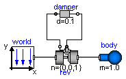
This simple model demonstrates that by just dragging components default animation is defined that shows the structure of the assembled system.

encapsulated model Pendulum
"Simple pendulum with one revolute joint and one body"
import Modelica;
import Modelica.Mechanics.MultiBody;
extends Modelica.Icons.Example;
inner Modelica.Mechanics.MultiBody.World world(gravityType=Modelica.Mechanics.MultiBody.Types.GravityTypes.
UniformGravity);
Modelica.Mechanics.MultiBody.Joints.ActuatedRevolute rev(n={0,0,1}, initType=Modelica.Mechanics.MultiBody.Types.
Init.PositionVelocity);
Modelica.Mechanics.Rotational.Damper damper(d=0.1);
Modelica.Mechanics.MultiBody.Parts.Body body(m=1.0, r_CM={0.5,0,0});
equation
connect(world.frame_b, rev.frame_a);
connect(damper.flange_b, rev.axis);
connect(rev.bearing, damper.flange_a);
connect(body.frame_a, rev.frame_b);
end Pendulum;
Modelica.Mechanics.MultiBody.Examples.Elementary.PendulumWithSpringDamper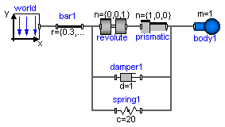
A body is attached on a revolute and prismatic joint. A 3-dim. spring and a 3-dim. damper are connected between the body and a point fixed in the world frame:

| Type | Name | Default | Description |
|---|---|---|---|
| animation | true | = true, if animation shall be enabled |
encapsulated model PendulumWithSpringDamper
"Simple spring/damper/mass system"
import Modelica.Icons;
import Modelica.Mechanics.MultiBody;
import Modelica.Mechanics.Rotational;
import Modelica;
extends Icons.Example;
parameter Boolean animation=true "= true, if animation shall be enabled";
inner Modelica.Mechanics.MultiBody.World world(axisLength=0.6);
Modelica.Mechanics.MultiBody.Parts.Body body1(
m=1,
animation=animation,
I_11=1,
I_22=1,
I_33=1,
r_CM={0,0,0},
cylinderDiameter=0.05,
sphereDiameter=0.2);
Modelica.Mechanics.MultiBody.Parts.FixedTranslation bar1(animation=animation, r={0.3,0,0});
Modelica.Mechanics.MultiBody.Forces.Spring spring1(
coilWidth=0.01,
numberOfWindings=5,
c=20,
s_unstretched=0.2);
Modelica.Mechanics.MultiBody.Forces.Damper damper1(
d=1,
length_a=0.1,
diameter_a=0.08,
animation=false);
Modelica.Mechanics.MultiBody.Joints.Revolute revolute(initType=Modelica.Mechanics.MultiBody.Types.Init.
PositionVelocity);
Modelica.Mechanics.MultiBody.Joints.Prismatic prismatic(
s_start=0.5,
boxWidth=0.04,
boxColor={255,65,65},
initType=Modelica.Mechanics.MultiBody.Types.Init.PositionVelocity);
equation
connect(world.frame_b, bar1.frame_a);
connect(revolute.frame_a, bar1.frame_b);
connect(prismatic.frame_a, revolute.frame_b);
connect(damper1.frame_a, bar1.frame_b);
connect(damper1.frame_b, prismatic.frame_b);
connect(spring1.frame_a, bar1.frame_b);
connect(spring1.frame_b, prismatic.frame_b);
connect(body1.frame_a, prismatic.frame_b);
end PendulumWithSpringDamper;
Modelica.Mechanics.MultiBody.Examples.Elementary.PointGravity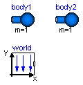
This model demonstrates a point gravity field. Two bodies are placed in the gravity field. The initial positions and velocities of these bodies are selected such that one body rotates on a circle and the other body rotates on an ellipse around the center of the point gravity field.

model PointGravity "Two point masses in a point gravity field"
import SI = Modelica.SIunits;
extends Modelica.Icons.Example;
inner Modelica.Mechanics.MultiBody.World world(
gravityType=2,
mue=1,
gravitySphereDiameter=0.1);
Modelica.Mechanics.MultiBody.Parts.Body body1(
m=1,
v_0_start={1,0,0},
r_0_start={0,0.6,0},
sphereDiameter=0.1,
I_11=0.1,
I_22=0.1,
I_33=0.1,
initType=Modelica.Mechanics.MultiBody.Types.Init.PositionVelocity);
Modelica.Mechanics.MultiBody.Parts.Body body2(
m=1,
r_0_start={0.6,0.6,0},
v_0_start={0.6,0,0},
sphereDiameter=0.1,
I_11=0.1,
I_22=0.1,
I_33=0.1,
initType=Modelica.Mechanics.MultiBody.Types.Init.PositionVelocity);
equation
end PointGravity;
Modelica.Mechanics.MultiBody.Examples.Elementary.PointGravityWithPointMasses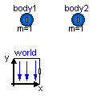
This model demonstrates a point gravity field. Two MassPoint bodies are placed in the gravity field. The initial positions and velocities of these bodies are selected such that one body rotates on a circle and the other body rotates on an ellipse around the center of the point gravity field.
model PointGravityWithPointMasses
"Two point masses in a point gravity field (rotation of bodies is neglected)"
import SI = Modelica.SIunits;
extends Modelica.Icons.Example;
inner Modelica.Mechanics.MultiBody.World world(
gravityType=2,
mue=1,
gravitySphereDiameter=0.1);
Modelica.Mechanics.MultiBody.Parts.PointMass body1(
m=1,
v_0_start={1,0,0},
r_0_start={0,0.6,0},
sphereDiameter=0.1,
initType=Modelica.Mechanics.MultiBody.Types.Init.PositionVelocity);
Modelica.Mechanics.MultiBody.Parts.PointMass body2(
m=1,
r_0_start={0.6,0.6,0},
v_0_start={0.6,0,0},
sphereDiameter=0.1,
initType=Modelica.Mechanics.MultiBody.Types.Init.PositionVelocity);
equation
end PointGravityWithPointMasses;
Modelica.Mechanics.MultiBody.Examples.Elementary.SpringDamperSystem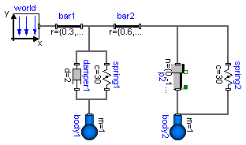
This example demonstrates:

| Type | Name | Default | Description |
|---|---|---|---|
| animation | true | = true, if animation shall be enabled |
encapsulated model SpringDamperSystem
"Simple spring/damper/mass system"
import Modelica.Icons;
import Modelica.Mechanics.MultiBody;
import Modelica.Mechanics.Rotational;
import Modelica;
extends Icons.Example;
parameter Boolean animation=true "= true, if animation shall be enabled";
inner Modelica.Mechanics.MultiBody.World world;
Modelica.Mechanics.MultiBody.Parts.Body body1(
m=1,
animation=animation,
initType=Modelica.Mechanics.MultiBody.Types.Init.PositionVelocity,
r_0_start={0.3,-0.2,0},
r_CM={0,-0.2,0},
w_0_start={0,0,2},
cylinderDiameter=0.05,
sphereDiameter=0.15,
I_11=0.1,
I_22=0.1,
I_33=0.1);
Modelica.Mechanics.MultiBody.Parts.FixedTranslation bar1(animation=animation, r={0.3,0,0});
Modelica.Mechanics.MultiBody.Parts.FixedTranslation bar2(animation=animation, r={0.6,0,0});
Modelica.Mechanics.MultiBody.Parts.Body body2(
m=1,
animation=animation,
cylinderDiameter=0.05,
sphereDiameter=0.15);
Modelica.Mechanics.MultiBody.Joints.ActuatedPrismatic p2(
initType=Modelica.Mechanics.MultiBody.Types.Init.PositionVelocity,
n={0,-1,0},
s_offset=0.1,
animation=animation,
enforceStates=true,
boxWidth=0.05);
Modelica.Mechanics.MultiBody.Forces.Spring spring2(
c=30,
s_unstretched=0.1,
coilWidth=0.01,
width=0.1);
Modelica.Mechanics.MultiBody.Forces.Spring spring1(
s_unstretched=0.1,
coilWidth=0.01,
c=30,
numberOfWindings=10,
width=0.1);
Modelica.Mechanics.MultiBody.Forces.Damper damper1(d=2);
equation
connect(world.frame_b, bar1.frame_a);
connect(bar1.frame_b, bar2.frame_a);
connect(bar2.frame_b, p2.frame_a);
connect(p2.frame_b, body2.frame_a);
connect(bar2.frame_b, spring2.frame_a);
connect(body2.frame_a, spring2.frame_b);
connect(damper1.frame_a, bar1.frame_b);
connect(spring1.frame_a, bar1.frame_b);
connect(damper1.frame_b, body1.frame_a);
connect(spring1.frame_b, body1.frame_a);
end SpringDamperSystem;
Modelica.Mechanics.MultiBody.Examples.Elementary.SpringMassSystem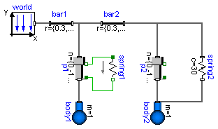
This example shows the two different ways how force laws can be utilized:

| Type | Name | Default | Description |
|---|---|---|---|
| animation | true | = true, if animation shall be enabled |
encapsulated model SpringMassSystem
"Mass attached with a spring to the world frame"
import Modelica.Icons;
import Modelica.Mechanics.MultiBody;
import Modelica.Mechanics.Rotational;
import Modelica;
extends Icons.Example;
parameter Boolean animation=true "= true, if animation shall be enabled";
inner Modelica.Mechanics.MultiBody.World world;
Modelica.Mechanics.MultiBody.Joints.ActuatedPrismatic p1(
initType=Modelica.Mechanics.MultiBody.Types.Init.PositionVelocity,
n={0,-1,0},
s_offset=0.1,
animation=animation,
enforceStates=true,
boxWidth=0.05);
Modelica.Mechanics.Translational.Spring spring1(c=30);
Modelica.Mechanics.MultiBody.Parts.Body body1(
m=1,
sphereDiameter=0.2,
animation=animation);
Modelica.Mechanics.MultiBody.Parts.FixedTranslation bar1(animation=animation, r={0.3,0,0});
Modelica.Mechanics.MultiBody.Parts.FixedTranslation bar2(animation=animation, r={0.3,0,0});
Modelica.Mechanics.MultiBody.Parts.Body body2(
m=1,
sphereDiameter=0.2,
animation=animation);
Modelica.Mechanics.MultiBody.Joints.ActuatedPrismatic p2(
initType=Modelica.Mechanics.MultiBody.Types.Init.PositionVelocity,
n={0,-1,0},
s_offset=0.1,
animation=animation,
enforceStates=true,
boxWidth=0.05);
Modelica.Mechanics.MultiBody.Forces.Spring spring2(
c=30,
s_unstretched=0.1,
width=0.1);
equation
connect(body1.frame_a, p1.frame_b);
connect(world.frame_b, bar1.frame_a);
connect(bar1.frame_b, p1.frame_a);
connect(p1.bearing, spring1.flange_a);
connect(spring1.flange_b, p1.axis);
connect(bar1.frame_b, bar2.frame_a);
connect(bar2.frame_b, p2.frame_a);
connect(p2.frame_b, body2.frame_a);
connect(bar2.frame_b, spring2.frame_a);
connect(body2.frame_a, spring2.frame_b);
end SpringMassSystem;
Modelica.Mechanics.MultiBody.Examples.Elementary.SpringWithMass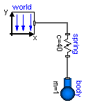
This example shows that a force component may have a mass. The 3-dimensional spring as used in this example, has an optional point mass between the two points where the spring is attached. In the animation, this point mass is represented by a small, light blue, sphere.

model SpringWithMass "Point mass hanging on a spring"
extends Modelica.Icons.Example;
inner Modelica.Mechanics.MultiBody.World world(animateGravity=false);
Modelica.Mechanics.MultiBody.Forces.Spring spring(
s_unstretched=0.2,
m=0.5,
c=40,
width=0.1,
massDiameter=0.07);
Modelica.Mechanics.MultiBody.Parts.Body body(initType=Modelica.Mechanics.MultiBody.Types.Init.PositionVelocity,
r_0_start={0,-0.3,0});
equation
connect(world.frame_b, spring.frame_a);
connect(body.frame_a, spring.frame_b);
end SpringWithMass;
Modelica.Mechanics.MultiBody.Examples.Elementary.ThreeSprings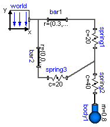
This example demonstrates that 3-dimensional line force elements (here: Modelica.Mechanics.MultiBody.Forces.Spring elements) can be connected together in series without having a body with mass at the connection point (as usually required by multi-body programs). This is advantageous since stiff systems can be avoided, say, due to a stiff spring and a small mass at the connection point.

| Type | Name | Default | Description |
|---|---|---|---|
| animation | true | = true, if animation shall be enabled |
encapsulated model ThreeSprings
"3-dim. springs in series and parallel connection"
import Modelica.Icons;
import Modelica.Mechanics.MultiBody;
import Modelica.Mechanics.Rotational;
import Modelica;
import ZeroMass;
extends Icons.Example;
parameter Boolean animation=true "= true, if animation shall be enabled";
inner Modelica.Mechanics.MultiBody.World world(animateWorld=animation);
Modelica.Mechanics.MultiBody.Parts.Body body1(
animation=animation,
r_CM={0,-0.2,0},
r_0_start={0.5,-0.3,0},
m=0.8,
I_11=0.1,
I_22=0.1,
I_33=0.1,
initType=Modelica.Mechanics.MultiBody.Types.Init.PositionVelocity,
sphereDiameter=0.2);
Modelica.Mechanics.MultiBody.Parts.FixedTranslation bar1(animation=animation, r={0.3,0,0});
Modelica.Mechanics.MultiBody.Forces.Spring spring1(
s_unstretched=0.1,
width=0.1,
coilWidth=0.005,
numberOfWindings=5,
c=20,
animation=animation);
Modelica.Mechanics.MultiBody.Parts.FixedTranslation bar2(animation=animation, r={0,0,0.3});
Modelica.Mechanics.MultiBody.Forces.Spring spring2(
s_unstretched=0.1,
width=0.1,
coilWidth=0.005,
numberOfWindings=5,
c=40,
animation=animation);
Modelica.Mechanics.MultiBody.Forces.Spring spring3(
s_unstretched=0.1,
width=0.1,
coilWidth=0.005,
numberOfWindings=5,
c=20,
animation=animation);
equation
connect(world.frame_b, bar1.frame_a);
connect(world.frame_b, bar2.frame_a);
connect(bar1.frame_b, spring1.frame_a);
connect(bar2.frame_b, spring3.frame_a);
connect(spring2.frame_b, body1.frame_a);
connect(spring3.frame_b, spring1.frame_b);
connect(spring2.frame_a, spring1.frame_b);
end ThreeSprings;